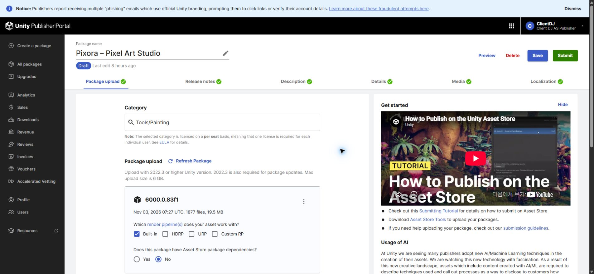
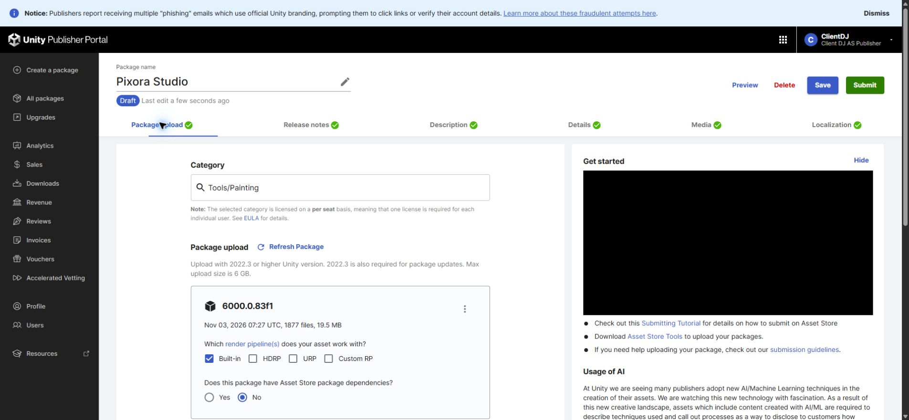
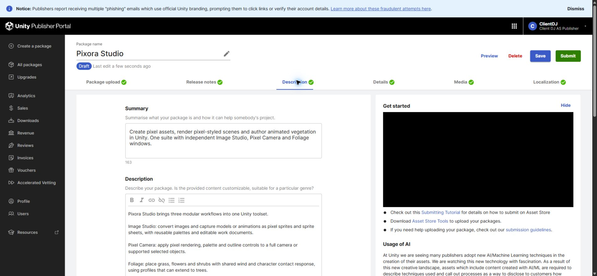

Tracefolio REPORTS & ISSUES
Tracefolio REPORTS & ISSUESPixora Studio 셀러 초안 4언어 정리 — 로고 연결 대기
검증 대기기존 Pixora 판매 초안을 Pixora Studio로 바꾸고 4언어 설명·기술정보·변경 이력을 저장·재열기 대조했습니다. 새 로고는 실제 Affinity 연결이 없어 미제작입니다.
작업 결과
기존 판매 초안의 제목·소개·기술정보·변경 이력을 Pixora Studio의 세 모듈 구성으로 정리하고 실제 저장값을 확인했습니다. 심사 제출·새 패키지 업로드·새 로고 제작은 하지 않았습니다.
변경 내용
적용 내용
- 기존 상품424614의 초안1541558을 수정했습니다. 가격·기존 별도 상품은 변경하지 않았습니다.
- 영어·한국어·일본어·중국어의 제목·요약·설명·기술정보·변경 이력과 AI 고지를 정리했습니다. 미검증 기능을 출시 완료로 설명하지 않았습니다.
- 현재 업로드 파일이 이전 Pixora 빌드임을 초안에 명시했습니다.
- 교훈 검토: 전역 지침 변경 없음. 실제 앱 SDK를 통한 편집과 GUI 조작을 구분하는 기존 원칙을 유지했습니다.
검증
- 전체 새로고침 후4언어 readback: 저장된 실제 필드와 입력 문구 대조 통과. Rich text는 문단 공백을 제외한 내용 대조이며 디자인 QA와 구분합니다.
- 변경 전: 이전 이름이 보이는 실제 업로드 탭입니다.

- 변경 후: 같은 업로드 탭에서 Pixora Studio 이름과 Draft 상태를 확인했습니다.

- 세 모듈로 정리한 실제 설명입니다.

- 캡처3개는 각각200KB 미만의 실제 원본 PNG입니다. 이미지 편집·가짜 화면 생성 없이 사용했습니다.
- Affinity CLI doctor/status는 샌드박스 밖에서도 ECONNREFUSED. 실제 프로세스와 앱 목록에서 실행된 Affinity가 확인되지 않았습니다. 설치 CLI 문서는 앱 실행과 MCP 서버가 필요하다고 명시하고 앱 실행 기능은 제공하지 않습니다. 이전 CLI 연결 성공 기록과 공식3.3.1 SDK 문서를 확인했으나 무창 실행·포커스 비간섭 복구 근거는 확인하지 못했습니다.
남은 사항
전용 로고는 미제작입니다. 화면 조작 없이 CLI·SDK로 편집할 수 있지만 현재는 실제 Affinity 앱 연결이 필요합니다. 사용자의 화면 제한을 임의로 해제하거나 다른 이미지 도구로 대체하지 않았습니다. 새 로고·갤러리와 통합 패키지 업로드 및 최종 제출은 남았습니다.
작업 시간
- 제안 시간: 추가 요청 시 연결 상태 확인 후 산정하기로 안내; 고정 예상 시간은 제시하지 않았음
- 실제로 완료된 시간: 셀러4언어 저장·재열기 대조는 2026-11-04 00:56 KST 이전 완료. 로고는 연결 제한으로 미완료이며 완료 시간으로 기록하지 않습니다.
- XERJ: 미사용 — 판매 문구·Affinity 연결 확인에는 코드 검색 불필요